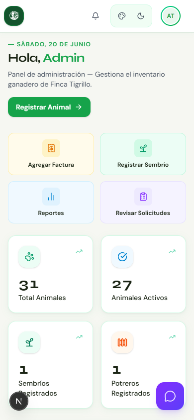
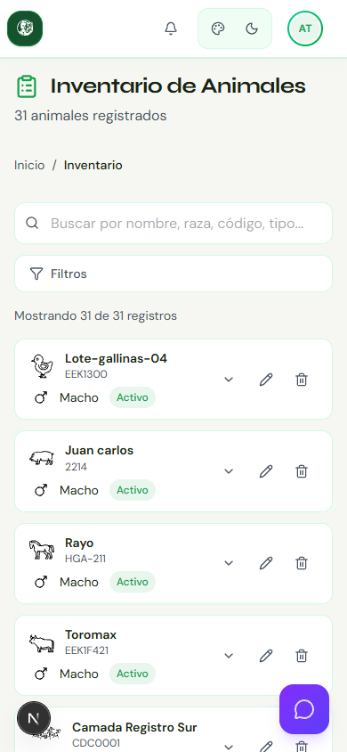
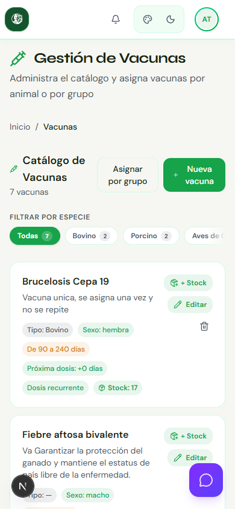
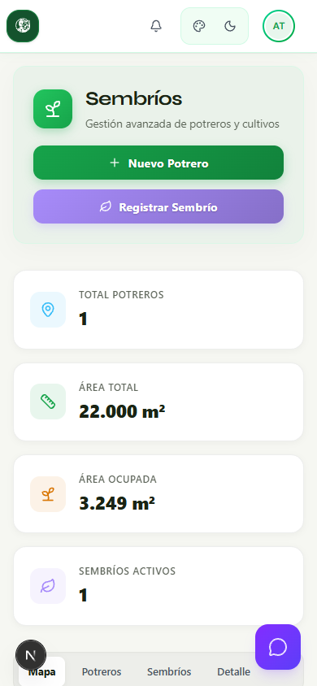
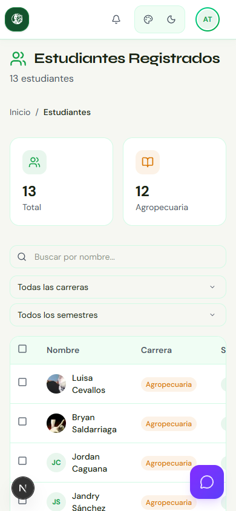

FINCA TIGRILLO
La plataforma que unifica gestión ganadera, agronómica y educativa
Tres roles, un solo ecosistema
👤 Administradores
📚 Docentes
🎓 Estudiantes
Panel de control
KPIs
Panel de control con KPIs, reportes e inteligencia operativa

Inventario ganadero
Multi-especie
Inventario multi-especie con trazabilidad completa

Salud animal + IA
Predictivo
Vacunas automatizadas y predicción reproductiva con IA

Agronomía
Potreros
Gestión de potreros, sembríos y alimentación avícola

Comunidad educativa
Estudiantes
Coordinación educativa: actividades, progreso y aprobaciones

FINCA TIGRILLO
Tecnología al servicio del agro educativo ecuatoriano